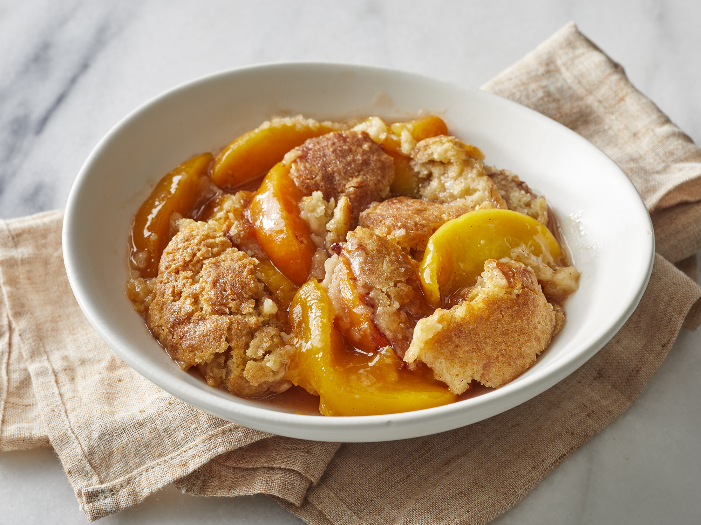

Peach Cobbler

Description
A delicious southern treat that makes Odelys' explode with excitement. Made with a heart full of love
hearty, tart and sweet peaches with a sweet crumble and crusty topping.
Ingredients
- 5 peaches, peeled, cored and sliced. (About 4 cups)
- 3/4 cub of grandulated sugar
- 1/4 teaspoon salt
For the topping:
- 6 tablespoons of butter
- 1 cup all-purpose flour
- 1 cup granulated sugar
- 2 teaspoons baking powder
- 1/4 teaspoon salt
- 3/4 cup milk
- ground cinnamon (to your liking)
Steps:
- Add the sliced peaches, sugar and salt to a saucepan and stir to combine. *(If using canned peaches, skip
steps 1 & 2 and follow the directions starting at step 3)
- Cook on medium heat for just a few minutes, until the sugar is dissolved and helps to bring out juices from
the peaches. Remove from heat and set aside.
- Preheat oven to 350F degreees. Slice butter into pieces and add to a 9x13 inch baking dish. Place the pan in
the over while it preheats, to allow the butter to melt. Once melted, remove the pan from the oven.
- In a large bowl mix together the flour, sugar, baking powder, and salt. Stir in the milk, just until
combined. Pour the mixture into the pan, over the melted butter and smooth it into an even layer.
- Spoon the peaches and juice (or canned peaches, if using) over the batter. Sprinkle cinnamon generously over
the top.
- Bake at 350 degrees for about 38-40 minutes. Serve warm, with a scoop of ice cream, if desired.